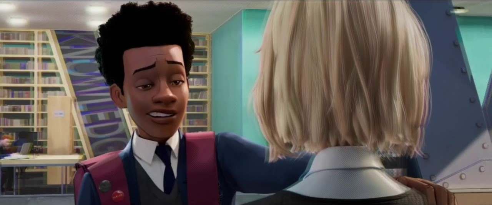
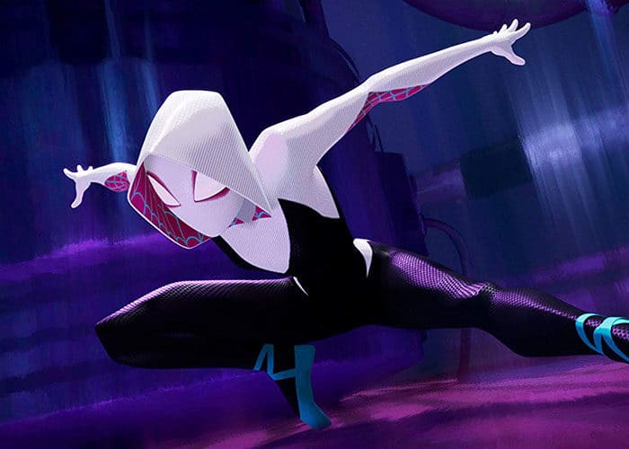
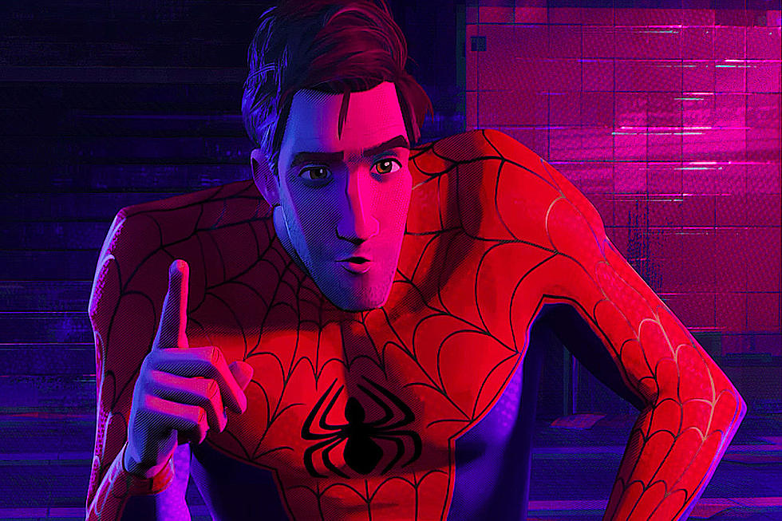
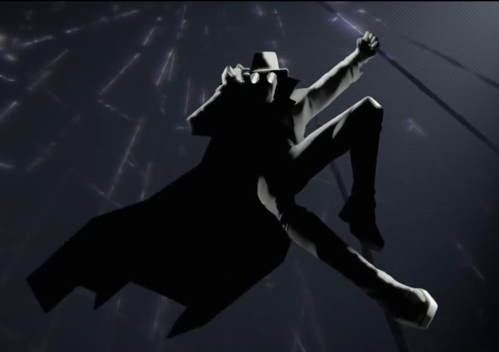
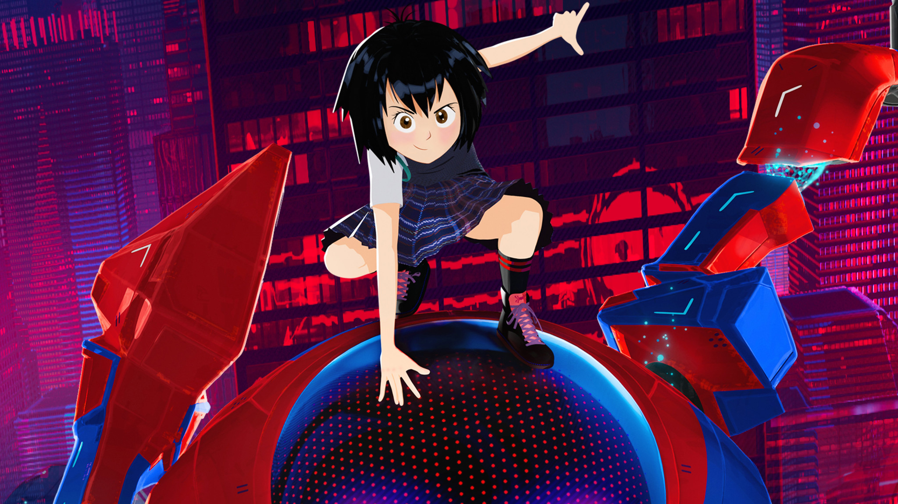

About our friendly neighbourhood teenager :

Miles about to take the "Leap of Faith", quite literally
Miles is awesome in a million ways, yes he is Spider Man, and in addition to basic Spider Man abilities he also has the power to turn invisible and to venom strike (electrocute) someone. Pretty cool, huh!
But that ain't it. He witnessed the death of Peter Parker, THE SPIDER MAN that everyone knows, and who in his reality had been Spider Man for over a decade, went on to inherit his name, defeated Kingpin, saved his city, Brooklyn from obivion. The reason he inspires me so much is because he is a normal kid who happened to get those powers by accident, ran scared through the streets thinking what he should do, found friends that understood him, sucked at being the Spider Man, got lectured by his dad (who hated the Spider Man at the time by the way), but trusted in his teacher (Spidey from another dimension), took a leap of faith, and came out on the other side as the awesome Spider Man, eveyone knows him to be.
Miles has a number of traits :
Miles trying the "Shoulder Touch"
- He is Awkward but still cool.
- He has superpowers but not arrogant.
- He is stressed out by homework but is actually brilliant.
- He is humble.
- He loves his friends and family to bits.
Miles literally has inter-dimensional friendships :
Miles does have friends here on Earth #1, but they aren't really mentioned in the movie. So, here are his inter-dimensional friends:
-

Gwen Stacy, Spider Gwen from Earth #65.
She has been one of the Spider-people since 2 years.
She is as graceful as a dancer (as she describes) even when fightining the deadliest foe.
She was the only one who was blown into the past when Kingpin's collider brought "them" on Earth no #1.
She is drummer on her Earth.
She was unable to save her friend, Peter Parker of her Earth, after she saved her dad. So, she kinda stays away from people to avoid any ditractions.
Still wanna know more? Click here -

Peter B. Parker, the Amazing Spider Man from Earth #616.
He has been one of the Spider-people since 22 years.
He is one of the most fascianting Spider Man and was willing to sacrifice himself so that all the "others" could go home, and Brooklyn can be saved too.
He and M.J. fell apart, after she wanted kids, and it scared him. He has also witnessed the death of her aunt May.
He was Miles' mentor and taught him how to swing and a bit more, not too much tho.
Still wanna know more? Read these -

Peter Parker, Spider Noir from Earth #9997 (also called Earth-X).
She has been one of the Spider-people since 2 years.
He is from a universe where it is 1933, and he is a private eye.
He likes egg creams, and fights nazis A LOT. He is always in Black & White even in more colorful universes.
He is one of the more darker versions of Spider Man.
Just like Uncle Ben for most Spider Men, he had an uncle named Benjamin, whose death was the turning point in his life.
Still wanna know more? Click here -
 Peter Porker, Spider Ham from Earth #8311.
Peter Porker, Spider Ham from Earth #8311.
He has been one of the Spider-people since .
He is a more cartoon-ish version of Spider people, and he was bit by a radioactive pig.
He can float, if he smells anything nice.
He also has a huge wooden hammer that can fit in his pocket for some reason.
Don't take him for a simple cartoon though, he is still badass.
Still wanna know more? Click here -

Peni Parker, SP//DR from Earth #14512.
She shares a genetic bond with her father's bionic robot (that houses a radioactive spider), to operate as one of the spider folks.
She is a vagitarian, tech-savvy, and pretty adorable.
She isa nimated in more of the japanese anime style, rather than ususal spidey style.
He is one of the more darker versions of Spider Man.
Her dad's death is the greatest tragedy of her life, but it doesn't bring her down.
Still wanna know more? Click here